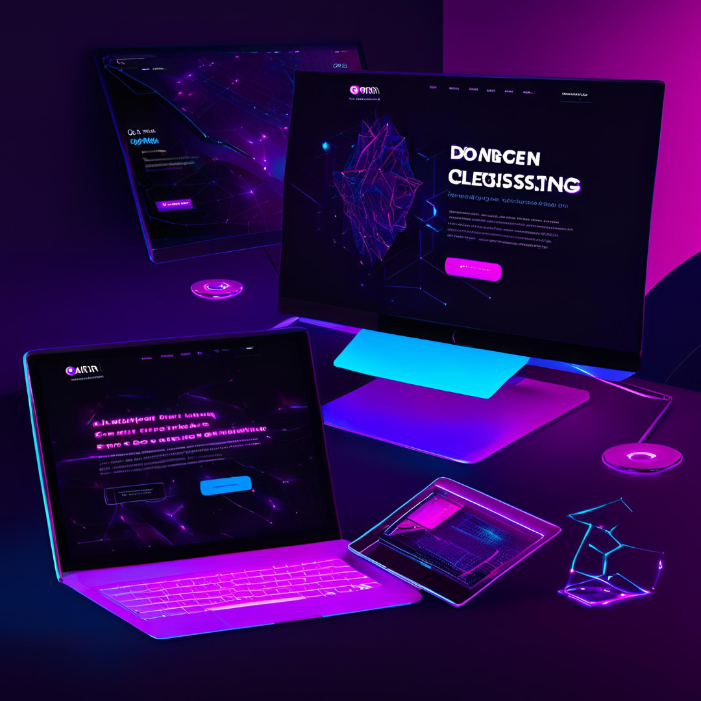

Welcome to My Professional Website
Welcome to Custom WEB DESIGN Company Inc., a leading provider of innovative technology solutions.
- Point One: Our mission is to deliver high-quality, efficient, and reliable technology services to our clients worldwide.
- Point Two: We specialize in web development, software solutions, and IT consulting services.
- Point Three: Our team of experienced professionals is dedicated to helping businesses achieve their technological goals and stay ahead in the competitive market.
- Point Four: Explore our website to learn more about our services, our team, and how we can help your business thrive in the digital age.
- Point Five: Whether you're looking for custom web development, software solutions, or expert IT consulting, MainFlow Technologies Inc. is here to provide the support you need.